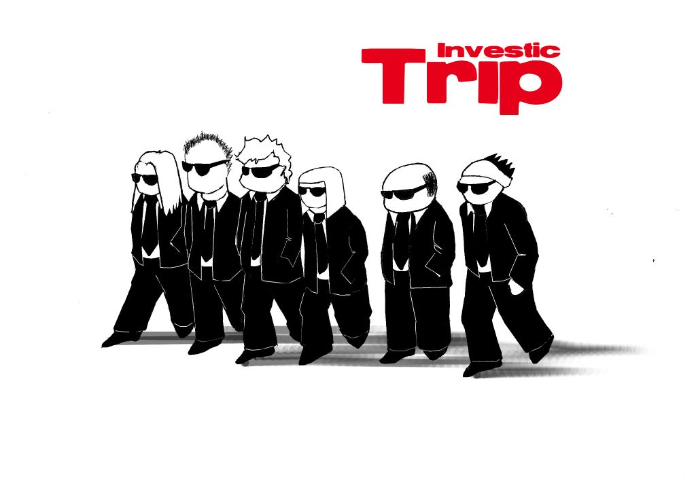
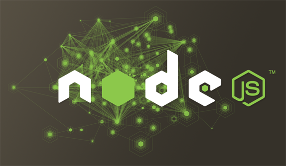
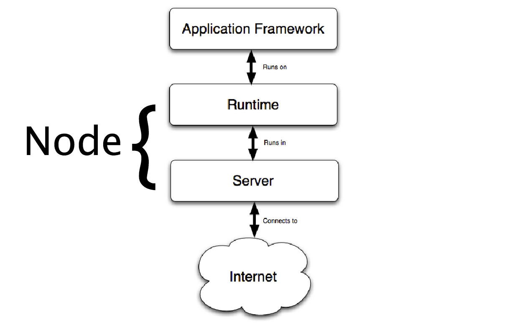
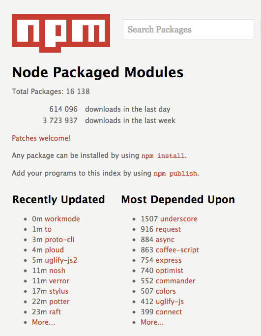
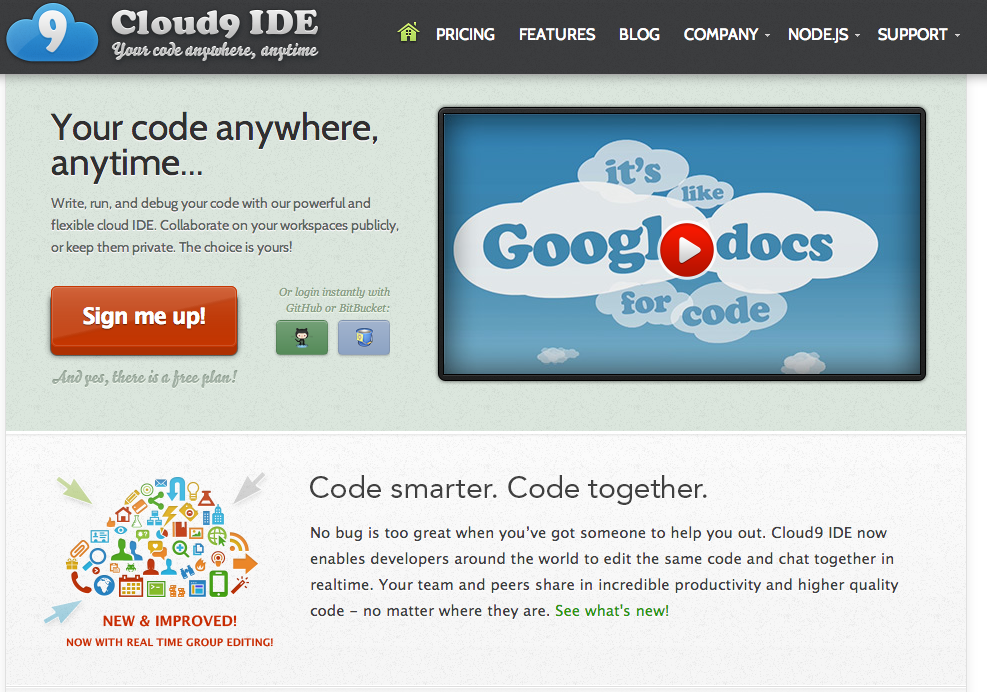
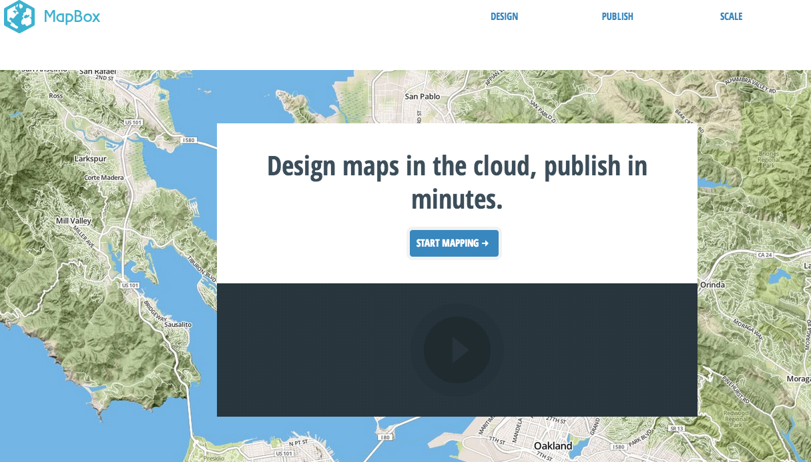

Drupal & Node.js
¿Amigos o enemigos?
Soy Karlos g Liberal
...también se me conoce como patxangas

Investic Fuimos

Interzonas Seremos
Release Early, Release Often y Lánzalo como sea.
Somos código y hacemos código, queremos que nuestro código se use, se mejore, se ensucie, se mezcle, mute o muera. El código es como un ser vivo que hasta ahora lo teníamos encerrado en nuestras cuatro paredes, ahora preferimos que como un virus viva libre y ocurra lo que tenga que ocurrir con él.
Libera rápido, libera pronto, y haz un bonito cadáver
Qué nos mola
#drupal #nodejs #visualizacion de datos, #fluidinfo, #meteora, #enyojs, #nodejitsu, #javascript, #arduino
Pero en definitiva lo que queremos ser es...
Modernos
Node.js
El objetivo de Node.js es proporcionar una manera fácil de construir programas de red escalables
Node.js
Node.js es inventado por Ryan Dahl en el verano del 2009 trabajando en Joyent. Ahora el proyecto lo lidera Isaac Z. Schlueter
Node.js
Runtime != Browser
Node.js
- Node es el entorno de ejecución más librerías.
- Basado en un conjunto de bibliotecas en C sobre el motor V8 de Google
- Utiliza un ciclo de eventos en lugar de hilos nuevos por cada conexión (event loop).
- Cada operación de I/O de node es asíncrona
- Centrado en la eficiencia
- Diseñado para la red. "Request" y "response", porque no hay nada más en la web
- Puede manejar miles de conexiones simultáneas con una sobrecarga mínima (CPU / MEMORY) en un sólo proceso
- Javascript del lado del servidor (SSJS)
Para qué esperar pudiendo ser Asíncronos
// E/S Bloqueante
var urls = db.query("select * from urls"); //esperar
urls.each(function(url){
var page = http.get(url); //esperar
save(page); //esperar
});
// E/s No bloqueante, petición asincrona
db.query("slect * from urls", function(urls){
url.each(function(url){
http.get(url, function(page){
save(page);
});
});
});
El coste de E/S
- L1: 3 cycles
- L2: 13 cycles
- RAM: 250 cycles
- Disk: 41,0000,000 cycles
- Network: 240,000,000 cycles

Node.js, javascript and the future
Imprescindible charla de Jeff Miccolis que con ejemplos explica por qué php y drupal es un infierno en según qué ciscunstancias y en node.js es fácil
OpenAtrium envío de notificaciones
Código php envío de correos
$addresses = array(
'jeff@mapbox.com',
'alex@mapbox.com',
'eric@mapbox.com'
);
$message = 'I am writing to inform you of a...';
$count = 0;
foreach($addresses as $sucker) {
if (mail($sucker, 'New opportunity', $message)) {
$count++;
};
}
echo "$count messages sent";
Código js envío de correos
var mail = require('mail');
var addresses = [
'jeff@mapbox.com',
'alex@mapbox.com',
'eric@mapbox.com'
];
var message = 'I am writing to inform you of a...';
var count = 0;
addresses.forEach(function(sucker, i) {
mail(sucker, 'New opportunity', message, function(err) {
if (!err) { count++; }
if (i == addresses.length - 1) {
console.log(count +" messages sent");
}
});
});
// Attempt to send email.
if (mail($sucker, 'New opportunity', $message)) {
$count++
};
// Once email is sent, get the next address.
echo 'next';
// Attempt to send email.
mail(sucker, 'New opportunity', message, function(err) {
if (!err) { count++; }
});
// Don't wait, get the next address NOW.
console.log('next');
100% asíncrono
Todo lo que sale de v8 devuelve "callback"
filesystem, network, stdio, timers, child processes
var fs = require('fs');
fs.readFile('/etc/passwd', function (err, data) {
if (err) throw err;
console.log(data);
});
var request = require('request');
request('http://example.com', function (err, resp, body) {
if (!err && resp.statusCode == 200) {
console.log(body);
}
});
La filosofía de Node.js
- Experimentación
- Kernel pequeño en funcionalidades ("small core" Do you remember XD?)
- Componentes libremente acoplados (Loosely coupled components)
Stable is "stable" Untable moves fast
http://blog.nodejitsu.com/the-nodejs-philosophy
¿Por qué es Node.js cool? (y no hablo de rendimiento)
Interpretando libremente lo que dice Nelson Elhage en su artículo
El resultado es que la mayoría de bibliotecas Node.js funcionan con esta filosofía. Puedes elegir las bibliotecas Node.js arbitrarias y combinarlas en el mismo programa sin ni siquiera tener que preocuparte en lo que estás haciendo
http://blog.nelhage.com/2012/03/why-node-js-is-cool/
Show me the code
https://github.com/karlosgliberal/tweetosc
var twitter = require('ntwitter');
osc = require('omgosc');
var twit = new twitter({
consumer_key: "",
consumer_secret: "",
});
movida['broadcast'] = true;
var sender = new osc.UdpSender('10.51.51.255', 7777, movida);
Show me the code
https://github.com/karlosgliberal/tweetosc
twit.stream('statuses/filter', {track:'mod8'}, function(stream) {
stream.on('data', function (data) {
var palabras = text.split("");
for (var i = 0; i palabras.length; i++) {
var text = data.text;
var palabras = text.split(" ")
for (var i = 0 i text.length i++) {
sender.send("/osc_data", "s", [text[i]]);
};
sender.send("/numero", "i", [text.length]);
};
});
stream.on("error", function (response) {
console.log(response);
});
});
NPM Node Packaged Modules

npm install mundo
NPM
La importancia de NPM
Npm es la herramienta fundamental para el manejo de dependencias o módulos en Node.js
- Publicar
- Descubrir
- Instalar
- Desarrollar programas en Node.js
Relación de algunos comandos de npm
npm init //Mediante un asistente crea el fichero package.jsonnpm search //busca en registro search.npmjs.org npm info //obtener info del paquete npm outdated //busca si hay versiones instalados en el directorio actual npm help //Para el restoPublicar paquete en el registro npm
Tu código tendrá que estar provisto del fichero package.json
{
"author": "Dean McNamee ",
"name": "omgosc",
"version": "0.1.0",
"repository": {
"type": "git",
"url": "git://github.com/deanm/omgosc.git"
},
"contributors": [
{
"name": "Oier Bravo Urtasun",
"email": "oierbravo@gmail.com"
}
],
"main": "./omgosc"
}
Publicar paquete en el registro npm
//Crear usuario
npm adduser username pass email
//Publicar paquete
npm publish
Paquetes totales: 16.138
614.096 descargados en el último día 3.723.937 descargados en la última semana
Alguna referencia
- Express
- request
- socket.io
- nodejs mongoose
- coffee-script
- mocha
- ntweeter
- backbone
- grunt
¿Quien usa Node.js?
Nodejitsu
Cloud9
developmentseed
Yahoo
Microsoft